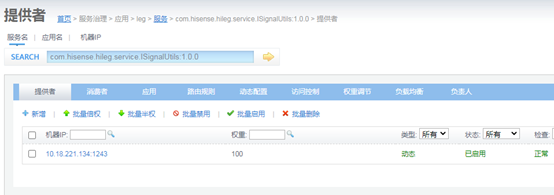

1.2.12.1. leg警卫安保系统
1.2.12.1.1. 功能描述
警卫安保系统核心安装包，拥有指挥调度、信号监控、视频跟踪等等页面。
1.2.12.1.2. 服务部署
1.2.12.1.2.1. 准备HiATMP-LEG.zip工程包
拟将HiATMP-LEG.zip服务部署在/usr/hileg/deploy/package下，进行解压。
#进入文件夹
cd /usr/hileg/deploy/package
#解压
unzip HiATMP-LEG.zip
1.2.12.1.2.2. 修改配置文件
根据现场情况修改/usr/hileg/deploy/package/HiATMP-LEG/WEB-INF/classes/leg.properties文件中相关部分，需修改的值为：
##数据库相应配置
#数据库密码
jdbc.password=hileg12
#数据库用户名
jdbc.user=hileg12
#数据库连接地址
jdbc.url=jdbc\:oracle\:thin\://@10.16.3.152\:1521/hiatmpdb
##单点登录相应配置
#wbc系统部署的服务地址，如：http://LEG_IP:LEG_PORT/HiatmpPro/
sso.default-target=http://10.18.221.134:8002/HiatmpPro/
#单点登录服务地址，如：http://SSO_IP:SSO_PORT/
sso.root-url=http://10.18.221.134:801/
##ZooKeeper相应配置
#Dubbo ZooKeeper服务器地址，根据现场修改Ip，端口
remoteservice.dubbo.register.address=10.18.221.134:2181
#Dubbo ZooKeeper服务器用户名(预留暂不配置)
remoteservice.dubbo.register.username=
#Dubbo ZooKeeper服务器密码(预留暂不配置)
remoteservice.dubbo.register.password=
#leg系统远程服务提供端口，如按规划为28002（如果为28002则不用修改）。注意，并不要求固定端口，但如果多个子系统安装在同一台服务器中，请保证各子系统此处的端口都不一样，并且不能与系统中其它已经占用的端口冲突，否则系统无法正常启动。
remoteservice.dubbo.provider.port=28002
##以下为leg依赖子系统服务地址,根据实际部署的子系统，填写相应的属性,属性值如：http://localhost:端口
#地图服务 http://HIMAP_IP: HIMAP_PORT
module.HIMAP= http://10.18.221.134:804
#FTP用户名
ftpusername=hiatmp
#FTP密码
ftppassword=hiatmp
# MQ用户
mq_user=hiatmp
# MQ密码
mq_password=hiatmp
#修改MQ的IP地址+端口
mq_server=tcp\://10.18.221.134\:61616?jms.optimizeAcknowledge=true&jms.optimizeAcknowledgeTimeOut=3000
#videoService服务器地址
video_service_address=10.18.221.134
#LEG后台IP地址:端口
leg_websocket=ws\://10.18.221.134\:8002/HiatmpPro/legwebsocket
#信号控制是否接入redis缓存，根据现场确定是否开启redis存储,为false时不需要修改以下参数↓↓↓↓↓↓↓↓↓↓↓↓↓↓↓↓↓↓↓↓↓↓↓
signalOpenRedis=false
# redis signal 单机模式 cluster 集群模式
reids_model_type=cluster
#集群模式ip及端口
addressList=10.18.221.134:6379|192.168.30.139:7001|192.168.30.139:7002|192.168.30.139:7003|192.168.30.139:7004|192.168.30.139:7005
# redis setting signal 单机模式Ip
hostName=10.18.221.134
# redis setting signal 单机模式端口
port=6379
# redis setting common
# redis密码
password=hileg
1.2.12.1.2.3. 准备tomcat
准备tomcat7以上版本的tomcat，如将apache-tomcat-7.0.59.zip拟拖入/usr/hileg/deploy/tomcat/目录，解压该文件。修改apache-tomcat-7.0.59名称为tomcat7-leg
# 进入文件夹
cd /usr/hileg/deploy/tomcat/
# 解压
unzip apache-tomcat-7.0.59.zip
# 改名
mv apache-tomcat-7.0.59 tocmat7-leg
1.2.12.1.2.4. 修改tomcat配置文件
打开tocmat7-leg/conf/server.xml按照应用服务器（WEB应用）端口规划的web服务端口、Shutdown端口、AJP端口、redirectPort端口,修改tomcat配置文件。
并根据HiATMP-LEG工程的实际位置，在该文件的
<?xml version="1.0" encoding="UTF-8"?>
<!--↓↓↓↓↓↓↓↓↓↓↓↓↓修改Shutdown:18500 ↓↓↓↓↓↓↓↓↓↓↓↓↓ -->
<Server port="18500" shutdown="SHUTDOWN">
<!--↑↑↑↑↑↑↑↑↑↑↑↑↑Shutdown ↑↑↑↑↑↑↑↑↑↑↑↑↑↑↑↑↑↑↑↑↑↑-->
<Listener className="org.apache.catalina.startup.VersionLoggerListener" />
<Listener className="org.apache.catalina.core.AprLifecycleListener" SSLEngine="on" />
<Listener className="org.apache.catalina.core.JreMemoryLeakPreventionListener" />
<Listener className="org.apache.catalina.mbeans.GlobalResourcesLifecycleListener" />
<Listener className="org.apache.catalina.core.ThreadLocalLeakPreventionListener" />
<GlobalNamingResources>
<Resource name="UserDatabase" auth="Container"
type="org.apache.catalina.UserDatabase"
description="User database that can be updated and saved"
factory="org.apache.catalina.users.MemoryUserDatabaseFactory"
pathname="conf/tomcat-users.xml" />
</GlobalNamingResources>
<Service name="Catalina">
<Executor name="tomcatThreadPool" namePrefix="catalina-exec-"
maxThreads="1000" minSpareThreads="100" acceptCount="4000"/>
<!--↓↓↓↓↓↓↓↓↓修改web:8002 redirectPort:18502 +并添加 URIEncoding="UTF-8"↓↓↓↓↓↓↓↓↓-->
<Connector port="8002" protocol="HTTP/1.1"
connectionTimeout="20000" executor="tomcatThreadPool"
redirectPort="18502" URIEncoding="UTF-8" maxPostSize="0"/>
<!--↑↑↑↑↑↑↑↑↑↑↑↑↑↑↑↑！web+redirectPort↑↑↑↑↑↑↑↑↑↑↑↑↑↑↑↑↑↑↑↑↑↑↑↑↑↑↑↑↑↑↑↑↑↑↑↑↑↑-->
<!-- ↓↓↓↓↓修改AJP:18501+ redirectPort:18502 +并添加 URIEncoding="UTF-8" ↓↓↓↓↓-->
<Connector port="18501" protocol="AJP/1.3" redirectPort="18502" URIEncoding="UTF-8"/>
<!--↑↑↑↑↑↑↑↑↑↑↑↑↑↑↑↑！AJP+redirectPort↑↑↑↑↑↑↑↑↑↑↑↑↑↑↑↑↑↑↑↑↑↑↑↑↑↑↑↑↑↑↑↑↑↑↑↑↑↑-->
<Engine name="Catalina" defaultHost="localhost">
<Realm className="org.apache.catalina.realm.LockOutRealm">
<Realm className="org.apache.catalina.realm.UserDatabaseRealm"
resourceName="UserDatabase"/>
</Realm>
<Host name="localhost" appBase="webapps"
unpackWARs="true" autoDeploy="true"
xmlValidation="false" xmlNamespaceAware="false">
<Valve className="org.apache.catalina.valves.AccessLogValve" directory="logs"
prefix="localhost_access_log" suffix=".txt"
pattern="%h %l %u %t "%r" %s %b" />
<!--↓↓↓↓↓ 添加HiATMP-LEG工程包地址指向,注意 path="/HiatmpPro" ↓↓↓↓↓↓↓↓↓↓↓↓-->
<Context path="/HiatmpPro" docBase="/usr/hileg/package/HiATMP-LEG" reloadable="false"></Context>
<!--↑↑↑↑↑↑↑ 添加HiATMP-LEG工程包地址指向 ↑↑↑↑↑↑↑↑↑↑↑↑↑↓↓↓-->
</Host>
</Engine>
</Service>
</Server>
1.2.12.1.2.5. 启动
配置完后进入tomcat7-leg/bin目录，执行授权命令并启动。
# 假设tomcat7-leg在/usr/hileg/deploy/tomcat/tomcat7-leg目录下，cd命令进入
cd /usr/hileg/deploy/tomcat/tomcat7-leg/bin
#授权文件执行权限
chmod 777 *
#启动tocmat
sh startup.sh
1.2.12.1.2.6. 关闭
kill -9 进程号
1.2.12.1.2.7. 重启
注意：重启时请通过kill -9 进程号，来杀死进程。并通过ps –ef|grep leg命令来确认服务是否被彻底关闭。彻底关闭后在通过启动命令启动。
1.2.12.1.3. 验证
在安保页面打开警卫要素进行验证

也可以从dubbo监控页面查看是否程序启动成功，进入dubbo监控页面选择服务，

在SEARCH栏中输入com.hisense.hileg.service.ISignalUtils搜索，搜索到的服务正常则说明部署成功。
